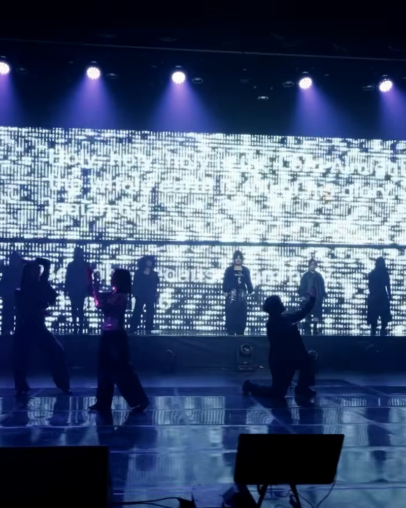

1지금 사진
1지금 사진2Born to Rise · 1:28
3Born to Rise · 1:56
4Born to Rise · 4:15
5Get up · 2:10
6Get up · 2:13
7Get up · 2:16
8Get up · 2:50
9위대하신 주 · 0:30
10위대하신 주 · 3:58
11위대하신 주 · 4:58
12위대하신 주 · 5:14
13주님은 너를 사랑해 · 0:50
14주님은 너를 사랑해 · 1:25
15주님은 너를 사랑해 · 1:39
16주님은 너를 사랑해 · 2:45
17Holy · 1:47
18Holy · 3:07
19E.L.D · 0:26
20E.L.D · 0:38
21Every day · 0:10
22Every day · 1:40
23Every day · 1:52
24Every day · 2:30
25Every day · 3:04

26I AM · 1:0427I AM · 1:10
28I AM · 2:15
29I AM · 2:17
30I AM · 2:58
31I AM · 3:52
32Jesus' Crown · 0:36
33Jesus' Crown · 0:59
34Jesus' Crown · 2:36